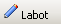

Kalendārais plāns¶
Kalendārais plāns ir visu pievienoto notikumu ( pasākumu , darbību ) attēlojums pa telpām , datumiem, laikiem, nosaukumiem un darbībām. Kalendārajā plānā ir iespējams redzēt visus pasākumus pa visām telpām vienā konkrētā nedēļā, vai arī atlasīt pēc konkrēta kritērija (kalendārā nedēļa, pasākuma nosaukums , darbība , telpa ), kā arī, izdrukāt atlasītos informāciju:
{kind=link}
Informācijas atlasīšanas iespējas¶
Informāciju iespējams atlasīt, katra izvēles lodziņa labajā pusē nospiežot uz bultiņas ( ), un izvēloties no saraksta attiecīgos atlasīšanas kritērijus:
{kind=link}

Informācijas atlasīšanas kritēriju sarakstā ir pieejama tā informācija, kura ir nodefinēta un saglabāta Mākslinieciskā darba plānošanas sarakstos ( darbības , pasākumi , telpas ).
Pasākumu ieraksta atvēršana no kalendārā vai dienas plāna¶
No Nedēļas kalendārā plāna ir iespējams atvērt arī dienas plānu, nospiežot ar peles kreiso taustiņu uz izvēlētās dienas/datuma, atveras dienas plāns:

Nospiežot bultiņas pogu  tiek atvērts
iepriekšējās dienas plāns, bet nospiežot pogu
tiek atvērts
iepriekšējās dienas plāns, bet nospiežot pogu  - tiek atvērts nākošās dienas plāns.
- tiek atvērts nākošās dienas plāns.
Nospiežot pogu ir iespējams izdrukāt dienas plānu.
{kind=link}
Lai no dienas plāna, atvērtu konkrētu Pasākumu , jāaktivizē pasākuma ieraksts dienas vai kalendāra plānā, un, aktivizējot ierakstu, ar peles kreiso taustiņu, tiek atvērts jau pievienots pasākuma ieraksta logs:

Apraksta sadaļā redzams pasākuma nosaukums, darbība, telpa, pasākuma datums un laiks, nodefinētās tehniskās vajadzības.
Atverot Dalībnieku sadaļu - , redzams pasākuma dalībnieku saraksts:
{kind=link}
{kind=link}
Dalībnieku sadaļas ierakstus iespējams kārtot pēc sturktūrvienības , lomas, personas , uzstāšanās laika vai radošās brigādes. Loga lejas daļā redzama ieraksta informācija un ieraksta statuss.
Lai labotu notikumu, jānospiež poga  :
{kind=link}

Sadaļā Apraksts , iespējams labot notikuma informāciju. Pasākuma nosaukumu iespējams ierakstīt manuāli, ja nav bijis nodefinēts jau iepriekš, tā saglabājot pasākuma pamatinformāciju pasākuma sarakstā .
Lai pievienotu jaunu darbību, kura nav sarakstā, jānospiež poga
 un jāsaglabā pievienotā darbība
. Tāpat, ja nepieciešams,no notikuma apraksta tiekpievienots jaunas
telpas ieraksts.
un jāsaglabā pievienotā darbība
. Tāpat, ja nepieciešams,no notikuma apraksta tiekpievienots jaunas
telpas ieraksts.
Dalībnieku sadaļā iespājams nodefinēt lomas pievienotajiem dalībniekiem, labot uzstāšanās laikus,un, janav nodefinēta radošā brigāde,katrai pievienotajai personaitiekatzīmēts ir vai nav radošā brigāde.Ja nepieciešams pievienot jaunus dalībniekus attiecīgajam notikumam:

Lai notikumam pievienotu jaunus dalībniekus, jānospiež poga
Pievienot, tiek atvērts logs:
{kind=link}
No dalībnieku izvēles saraksta jāartzīmē tos dalībniekus, kurus jāpievieno notikuma dalībnieku sarakstam, un loga visus daļā jānospiež bultiņas, lai pievienotu dalībniekus. Ja nepieciešams izņemt kādu no pievienotajiem dalībniekiem, tad attiecīgi loga labajā pusē jāatzīmē dalībniekus, un jānospiež bultiņas, lai pārvietotu atzīmētos dalībniekus uz dalībnieku izvēles saraksta pusi.
Ja nepieciešams pievienot dalībnieku, kurš nav izvēles sarakstā, tad
loga labajā pusē jānospiež poga Pievienot, un
tiek atvērts logs:

Atvērtajā logā jāatzīmē (jāieķeksē) tie dalībnieki, kuri tiks pievienoti notikuma dalībnieku sarakstam, un jānospiež poga Pievienot:
{kind=link}
Lai no dienas plāna aizietu atpakaļ uz nedēļas kalendārā plāna skatu,
jānospiež kalendāra podziņa  .
.
Jauna notikuma pievienošana nedēļas/ dienas kalendārajā plānā¶
Kalendārajā nedēļas vai dienas plānā ir iespējams pievienot jaunu notikumu . Jauna notikuma pievienošana iespējama arī moduļa sadaļā jauns notikums .
Lai pievienotu jaunu notikumu noteiktā datumā, noteiktās telpas ierakstu logā jānospiež uz bultiņas notikumu informatīvajā skatlodziņā:
{kind=link}
Jauna notikuma pievienošanas apraksts sadaļā Jauns notikums .